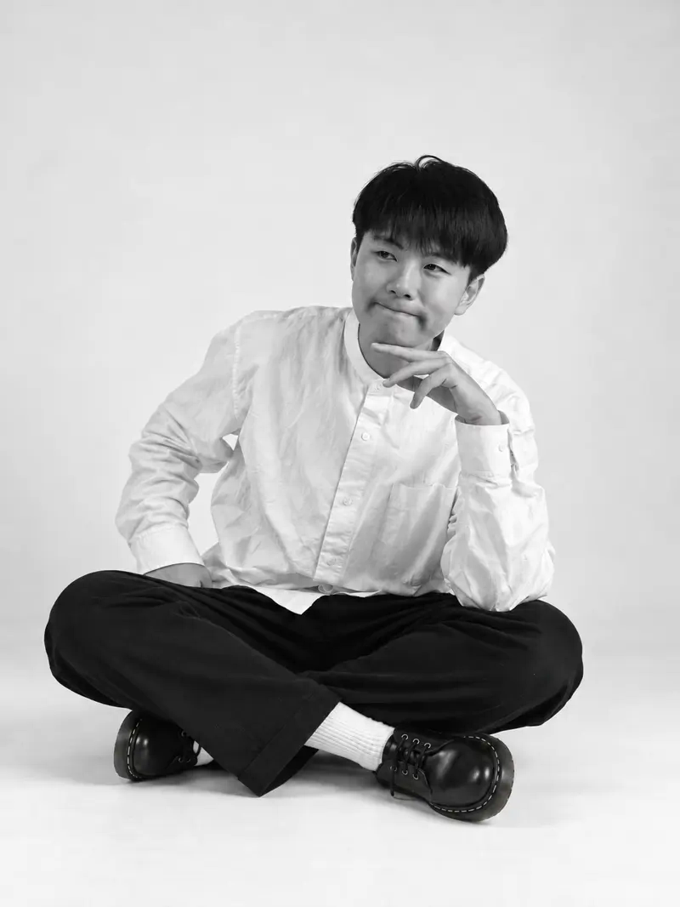

Yuan Chi Chang
PRODUCT MANAGEMENT × UX
Product Designer / B2B SaaS
Taipei · chi861008@gmail.com

PROFILE
B2B SaaS product designer combining UX research, product definition, interaction design and AI-assisted development. I translate field evidence into testable solutions and build tools to streamline repetitive research work.
SELECTED PRODUCT EXPERIENCE | PROTECH
Customer Display System
Combined field observations, competitive research and product requirements to inform priority segments and checkout display design.
Kitchen Display System
Contributed to user research and design decisions involving stations, alerts, information density and error tolerance.
Self-ordering Kiosk
Participated in usability testing, analysis and prototypes for combo selection, add-ons and payment guidance.
INDEPENDENT WORK
My AI Workflow
Built custom GPT, Skills and a research repository for Quote extraction, editable Figma affinity maps and knowledge management.
Quotes: ~1 day → 30 min | Figma: half day → 5 min | Repository: ~1 hour → 5 min
Pilates Scheduling System
Researched instructor scheduling needs, defined business rules and independently built and deployed the product.